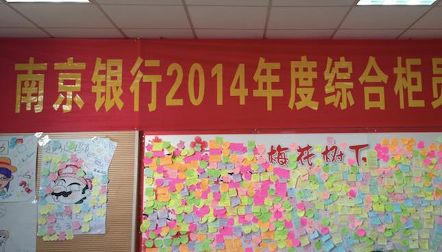

-
课程名称： 《职业化系列——员工职业化素养修炼》
课程主讲： 王维玲
课程对象：管理者及一线员工
课程收益：
n 呼唤感恩心态，激发使命感和责任感；
n 明确工作的意义以及个人的成长、发展与企业的关系；
n 塑造职业心态，敬业为先；建立目标，追求成长；
n 顺利步入职业化道路的正轨与企业共同发展，共享未来.
授课方式：
n 讲师讲述
n 案例精举
n 情境演练
n 小组讨论
n 视频与FLASH呈现
n 团队游戏
n 形体训练
课时安排：1-2天（6小时/天）
课程大纲：
第一模块：职场机遇与挑战----------职业生涯规划
第二模块：解读职业化内涵----------职业生涯基础
第三模块：职业化必备DNA---------职业生涯素质
第四模块：职业化精神培育----------职业生涯收获
课程要点：
Ø 机遇与挑战
l 解读当今竞争
l 未来的竞争是？
l 我们的职业化程度将决定你的前途
Ø 我们与职业有多远？
l 案例分享：三座桥的故事
l 成功的秘诀－－热情和责任感
l 责任胜于能力
Ø 什么是职业化？
l 职业化定义的启示
l 职业化要素分析
l 职业化定位的重要性
n 思路---行为---结果---人生
Ø 职业化阻碍因素
l 物质&精神
l 付出&收获
l 过程&结果
l 思想&行为
l 自我&他人
第二模块：解读职业化内涵----------职业生涯基础
Ø 职业化四大体现
l 职业化工作能力
l 职业化工作形象
l 职业化工作态度
l 职业化工作意识
Ø 职业化基本功
l 把工作干好的唯一标准——为客户创造价值
l 把工作干好的方法——用心
l 把工作干好的方法——专业
l 把工作干好的方法——标准化
l 把工作干好的方法——创新
l 把工作干好的方法——细节
l 把工作干好的方法——时间
Ø 职业化基本素质
l 理念决定命运：敬业受益终生
l 知识创造未来：学习拥有明天
l 能力构筑竞争：有为才能有位
l 行为体现素养：细节决定成败
第三模块：职业化必备DNA----------职业生涯素质
Ø 职业化必备三种意识
l 服务意识---企业卖是是什么？
l 执行意识---如何把事情不仅做对，还要做好
n 执行中的问题分析
n 绝对服从是执行力的核心
l 创新意识---变才是永恒不变（诺基亚案例）
Ø 职业化必备三种热爱
l 热爱本职——爱一行干好一行
l 热爱挫折——善于从挫折中寻找机会
l 热爱学习——只有学到老，才能活到老
Ø 职业化必备三种心态
l 空杯的心态－－只有『倒空』,才能『成长』
l 感恩的心态－－是你给企业机会，还是企业给你机会
l 快乐工作的心态－－工作是什么？为谁工作？
Ø 职业化必备三种能力
l 情绪管理能力－－人与人之间的竞争，一定程度上是情绪管理能力的竞争
n 自我情绪管理---情绪管理ABC
n 客户情绪管理---如何化解客户情绪，建立一份友谊
l 人际沟通能力－－世界是人组成的，赢得人心，就赢得世界
n 世界上最远的距离---咫尺天涯，不良沟通
n 黄金法则—真诚
n 白金法则—尊重
n 钻石法则—同理心
l 团队协作能力－－没有完美的个人，只有完美的团队
n 容人之短，用人之长
n 团队的特点1+1>2
n 角色互补，共同成长
第六模块：职业化精神培育---------职业生涯收获
Ø 主人翁精神
l 个人的发展依靠于企业
l 个人的生存也离不开企业
Ø 忠诚精神
l 忠诚比能力更重要
l 最受企业欢迎的员工（西点军校）
Ø 主动精神
l 被动做事是任务，主动做事是品质
l 被动是对，主动是做好
Ø 老板精神
l 企业需要什么样的员工？
l 为老板打工还是为自己？
Ø 课程的总结与回顾


 回顶部
回顶部